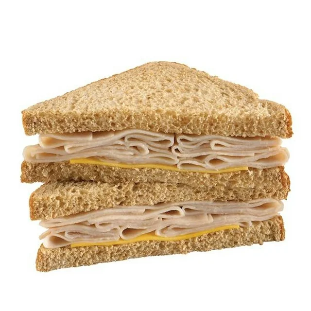

Turkey and Cheese Sandwich

Description
Turkey and Cheese Sandwich is a quick and easy food that you can digest! If you had to look up a recipe for this you are the most pathetic human on this side of the planet. It's a sandwich made with turkey and cheese, great for lunches and pairs great with a soup.
Ingredients
- Bread (sliced is prefered)
- A couple of slices of Deli Turkey Meat
- 1 to 2 slices of cheese
Cooking Steps
- Place 1 slice of bread on assembling station
- Apply layers of turkey deli meat to your own preferences
- Add layer of cheese, using 1 to 2 slices as deemed necessary by the chief
- Top the sandwich with another slice of bread
- Enjoy your sandwich!